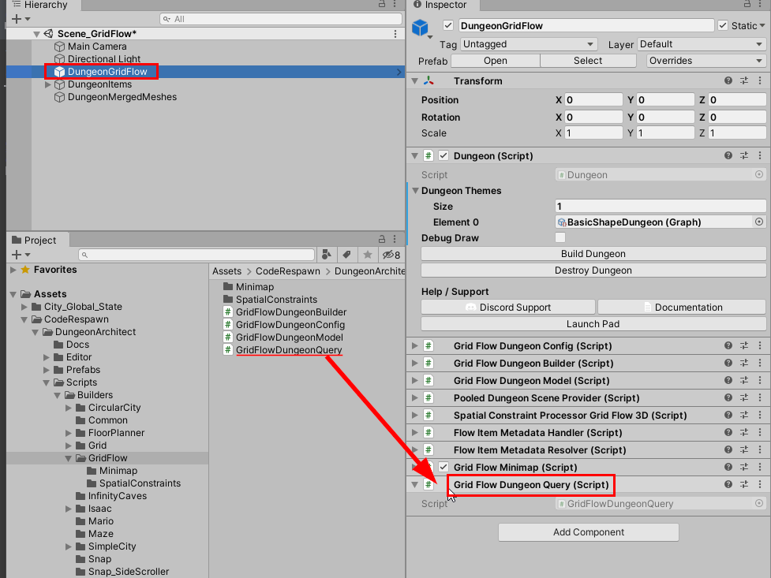
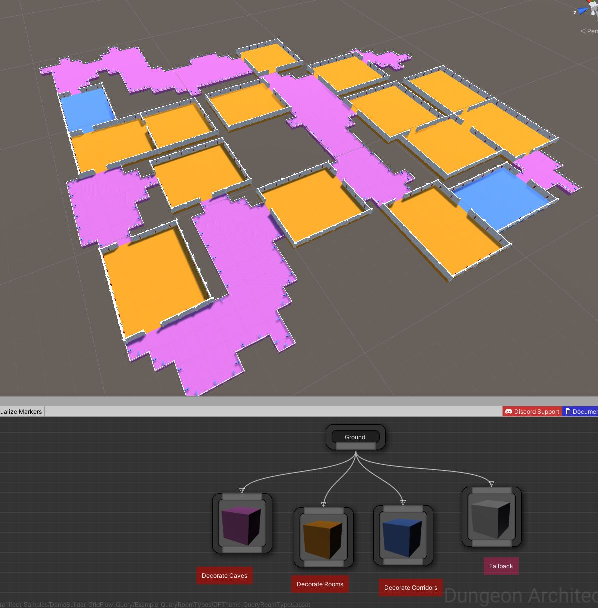
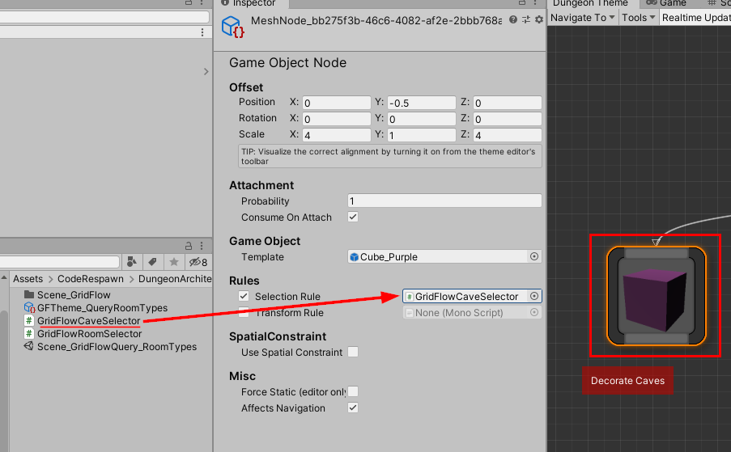
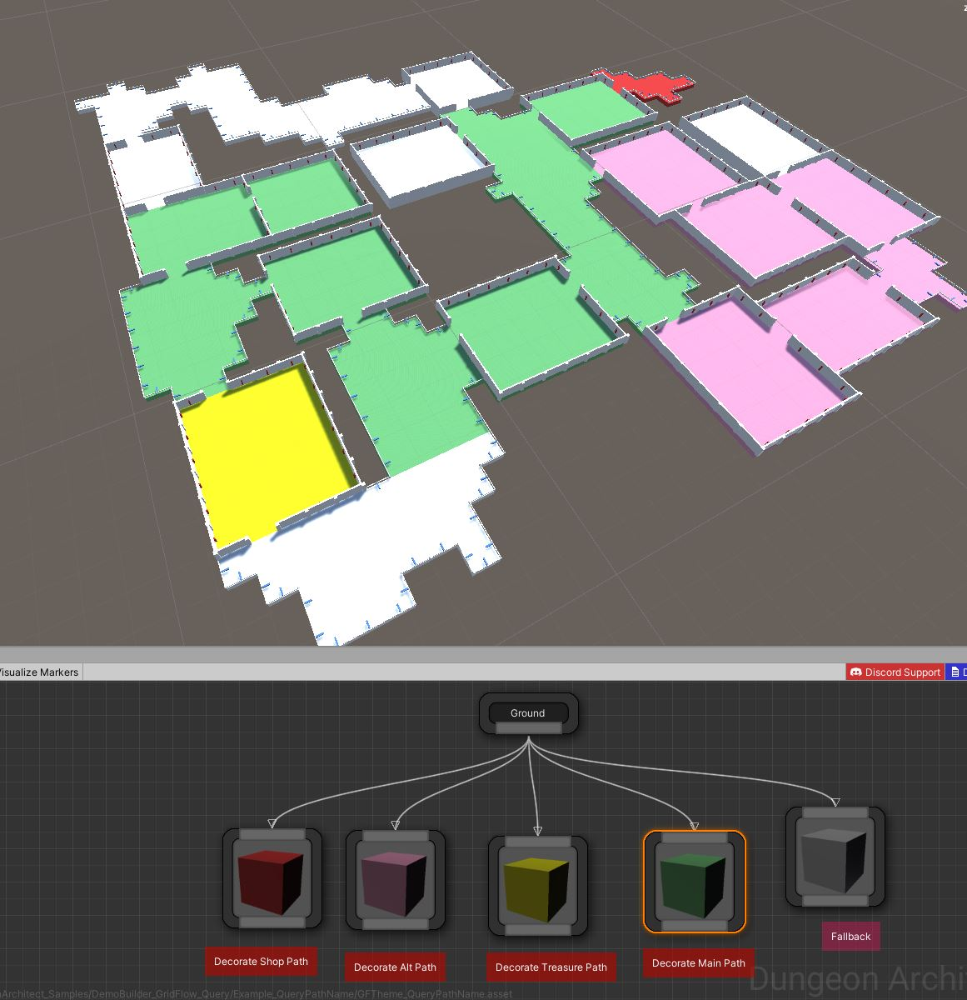

Use the Query Interface to query different parts of your grid flow dungeon. These are great for selectively decorating your dungeons or for any gameplay specific needs
Use this to selectively decorate your dungeons based on various conditions
Decorate Caves, Rooms and Corridors differently
Custom decorations on different paths (e.g. Treasure Room, Shops, Main Path, Alt Path, Key Rooms etc.)
Setup
Select the Grid Flow Dungeon game object and make sure GridFlowDungeonQuery script is added to it. If not, add it

Query Room Type
Decorate your dungeons based on the room type (e.g. Room, Cave, Corridor)

Create a selector rule script like below:
using UnityEngine;
using DungeonArchitect;
using DungeonArchitect.Builders.GridFlow;
using DungeonArchitect.Flow.Impl.GridFlow;
using DungeonArchitect.Utils;
public class GridFlowCaveSelector : SelectorRule
{
public override bool CanSelect(PropSocket socket, Matrix4x4 propTransform, DungeonModel model, System.Random random)
{
var gridFlowModel = model as GridFlowDungeonModel;
if (gridFlowModel == null) return false;
var query = gridFlowModel.Query;
if (query == null) return false;
var markerLocation = Matrix.GetTranslation(ref propTransform);
var roomType = query.GetRoomType(markerLocation);
return roomType == GridFlowLayoutNodeRoomType.Cave;
}
}
Notice the last line return roomType == GridFlowLayoutNodeRoomType.Cave; Check for your room type here.
Attach this script to the theme nodes that are used to selectively decorate the caves

Query Path Name
Decorate your dungeons based on the path (e.g. Shops, Treasure Rooms, Main Path, Alt Path etc)

Create a selector script as shown below and specify your path name there
using UnityEngine;
using DungeonArchitect;
using DungeonArchitect.Builders.GridFlow;
using DungeonArchitect.Flow.Impl.GridFlow;
using DungeonArchitect.Utils;
public class GridFlowPathSelector_MainPath : SelectorRule
{
public override bool CanSelect(PropSocket socket, Matrix4x4 propTransform, DungeonModel model, System.Random random)
{
var gridFlowModel = model as GridFlowDungeonModel;
if (gridFlowModel == null) return false;
var query = gridFlowModel.Query;
if (query == null) return false;
var markerLocation = Matrix.GetTranslation(ref propTransform);
var pathName = query.GetPathName(markerLocation);
// Select nodes with the specified path (this was defined in the grid flow editor's `Create Path` node)
return pathName == "main"
|| pathName == "main_start"
|| pathName == "main";
}
}
Attach this script to the theme nodes you'd like to decorate